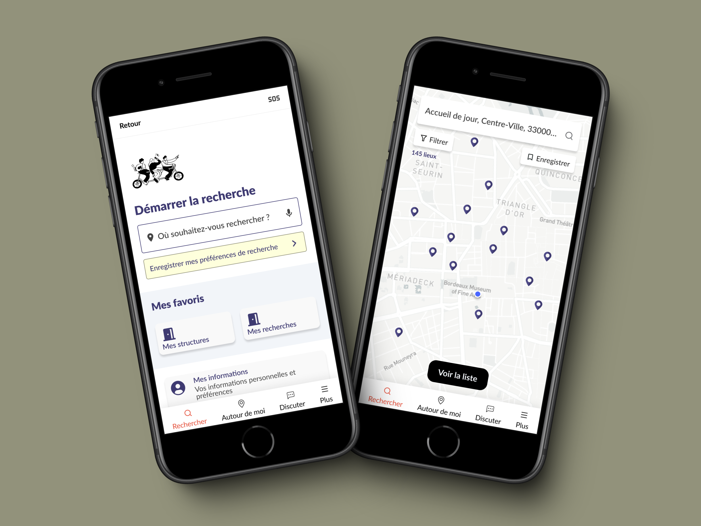
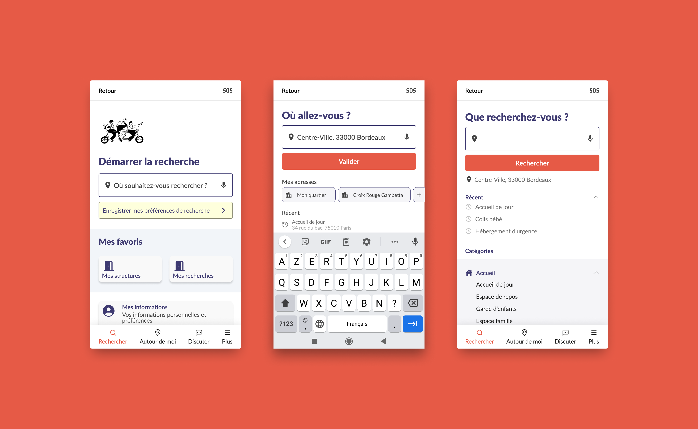
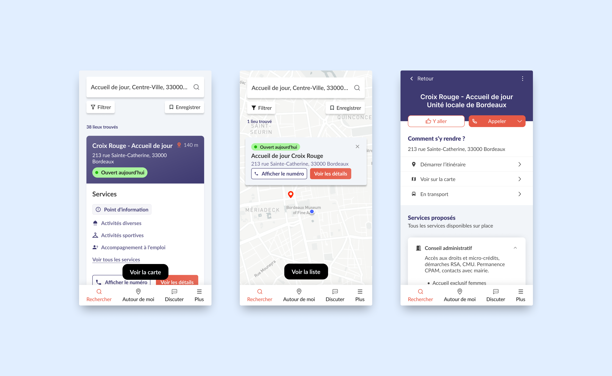

Soliguide
App mobile pour les personnes en situation de précarité
Contexte
Mission de 6 mois avec un UX Designer Senior, un PM, et un Responsable tech
Missions
Outils
Figma, Figjam, UsabilityHub, Analytics
Aperçu de l'app
Onboarding (FTUE)

Démarrer une recherche
Consulter un résultat de recherche
